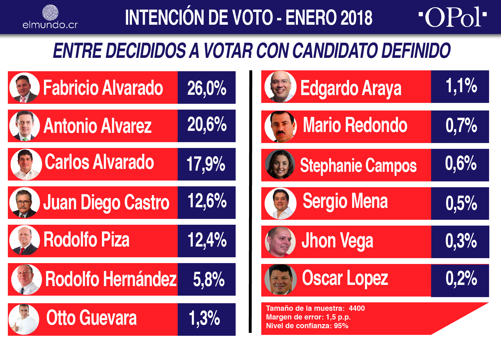
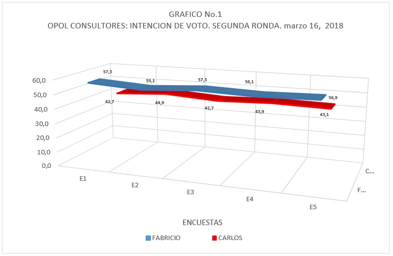

Informacion de la Encuestas
Las elecciones presidenciales de Costa Rica de 2018 se realizaron el domingo 4 de febrero de 2018 para elegir al presidente de la República, los vicepresidentes y los diputados del Congreso. Sin embargo, debido a que ningún candidato logró superar el mínimo constitucional del 40 % de los votos (necesarios para ganar los comicios) debió realizar un balotaje para el 1 de abril.
En este participaron los dos candidatos más votados: el diputado, periodista y cantante cristiano Fabricio Alvarado Muñoz del partido conservador Restauración Nacional; y el escritor, politólogo, periodista y exministro Carlos Alvarado Quesada del socialdemócrata Partido Acción Ciudadana con 24,91 % y 21,66 % respectivamente.
A estos le siguieron Antonio Álvarez Desanti de Liberación Nacional con 18,62 %, Rodolfo Piza Rocafort de la Unidad Social Cristiana con 16,02 %, Juan Diego Castro Fernández de Integración Nacional con 9,52 % y Rodolfo Hernández Goméz del Republicano Socialcristiano con 4,95 %.
Las votaciones de 2018 fueron los decimoséptimos comicios efectuados en el país desde que está vigente la constitución política de 1949. Además, representaron la ruptura más drástica del tradicional bipartidismo costarricense al suceder, por primera vez desde que está vigente la Segunda República, que ninguno de los dos partidos tradicionales (PLN y PUSC) pasaran a la segunda ronda. El PLN sufrió en estos comicios la mayor derrota electoral de su historia.
La segunda ronda fue ganada por Carlos Alvarado, quien logró acuñar el 60% de los votos por sobre su rival Fabricio Alvarado que obtuvo 39%.23 Es la primera vez en la historia de Costa Rica que el candidato que quedó de segundo en la primera vuelta gana el balotaje, además de ser la primera vez que el abstencionismo se reduce con respecto a los resultados de la primera ronda. Por segunda ocasión, un candidato obtuvo más de un millón de votos en la segunda ronda, siendo la primera el cuatrenio anterior con Luis Guillermo Solís del mismo partido.
Resultados de Encuestas
Resultados de encuesta 1 |
Resultados de encuesta 2 |

Link Primera encuesta |

Link Segunda encuesta |